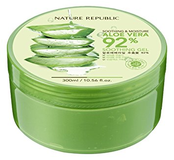

Es una de las más de 250 especies de Aloe conocidas en el mundo. Habita principalmente en zonas desérticas o semidesérticas, donde se da el clima más adecuado para su crecimiento. Se caracteriza por estar formada por un grupo variable de hojas que parten de un tronco que hace las veces de raíz central y del que sale esporádicamente, 2 o 3 veces por año, un largo tallo coronado con flores amarillas. Su fruto es una capsula triangular que contiene numerosas semillas.
Las hojas del Aloe vera merecen especial atención, puesto que de ellas se extrae el jugo usado históricamente para curar todo tipo de dolencias. Carnosas, con un tamaño de 50 cm de largo y un considerable grosor, son capaces de acumular gran cantidad de agua. En las horas de sol, para evitar la evaporación, el Aloe cierra sus poros o estomas, conservando así el agua de su interior. Estas reservas son almacenadas y consumidas lentamente cuando las lluvias escasean, de este modo, puede llegar a reducir su tamaño, y consistencia e incluso a sacrificar alguna de sus hojas para poder sobrevivir.
Propiedades y beneficios
Las ventajas que nos ofrece la sábila son numerosas si sabemos cómo utilizarla o qué producto usar en cada caso. Esta planta es perfecta para cuidar de nuestra salud en general. Sirve para tratar diversos problemas de la piel, para blanquear los dientes o las manchas y para aliviar dolores. Por eso se utiliza en tratamientos para la psoriasis, en las cremas antiacné y anti edad, en las pomadas para aliviar las quemaduras o las picaduras de insectos y en muchos otros tratamientos que ni imaginamos. Incluso se puede ingerir en diferentes bebidas que nos ayudarán a aliviar problemas como gastritis y úlceras. También nos resultará muy eficaz tomar aloe vera para el estreñimiento.
Por lo tanto, en resumen podemos destacar las siguientes propiedades que nos brinda el aloe vera:Tratamiento de problemas de la piel. Blanquear los dientes y manchas. Aliviar dolores. Combatir el estreñimiento.
Composición
El aloe vera está presente en numerosos productos destinados tanto para la salud como para la belleza. Esto se debe a su composición, rica en resinas protectoras, vitaminas, aminoácidos, proteínas, polisacáridos, enzimas, minerales y otros oligoelementos como el germanio, altamente beneficioso para la salud.
 Gel relajante.Dentro de su compleja composición encontramos:
Entre las propiedades más significativas se encuentran compuestos bioactivos que mejoran tu salud, tratamiento de las úlceras bucales (aftas), el jugo puro reduce la placa dental tanto como los enjuagues bucales, puede mejorar la elasticidad de la piel y ayudar a prevenir las arrugas, acelera la curación de quemaduras, tiene potentes propiedades antioxidantes y antibacterianas, puede reducir los niveles de azúcar en sangre en personas diabéticas y así también ayuda a tratar el estreñimiento.